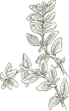
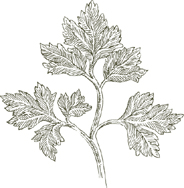

ВКУС, В ИТАЛЬЯНСКИХ БЛЮДах, строится с основания. Это не покрытие, а основа. В соусе для пасты, ризотто, супе, фрикасе, рагу или блюде из овощей основа вкуса поддерживает, поднимает, подчеркивает основные ингредиенты. Понять этот архитектурный принцип, центральный для структуры многих итальянских блюд, и познакомиться с тремя ключевыми техниками, которые позволяют его применять, — значит сделать большой шаг к овладению итальянским вкусом. Эти техники известны как баттуто, соффритто и инсапорире.
Название происходит от глагола battere, что означает «ударять», и описывает нарезанную смесь ингредиентов, полученную путем «ударения» их на разделочной доске с помощью ножа. Когда-то почти неизменными компонентами баттуто были сало, петрушка и лук, все очень мелко нарезанные. Чеснок, сельдерей или морковь могут быть добавлены в зависимости от блюда. Основное изменение, которое принесло современное использование, — это замена сала на оливковое масло или масло, хотя многие деревенские повара по-прежнему полагаются на более насыщенный вкус последнего. Как бы ни было сформулировано, баттуто является основой практически каждого соуса для пасты, ризотто или супа, а также множества мясных и овощных блюд.
Когда баттуто пассеруется в кастрюле или сковороде до тех пор, пока лук не станет прозрачным, а чеснок, если он есть, не приобретет бледно-золотистый цвет, он превращается в соффритто. Этот шаг предшествует добавлению основных ингредиентов, какими бы они ни были. Хотя многие повара делают соффритто путем пассерования всех компонентов баттуто одновременно, более тщательное приготовление требует держать лук и чеснок отдельно. Сначала пассеруется лук, когда он становится прозрачным, добавляется чеснок, а когда чеснок становится окрашенным, добавляется остальная часть баттуто. Причины две: первая, если вы начнете с пассерования лука, вы создаете более насыщенную основу вкуса, в которой можно пассеровать баттуто; вторая, потому что луку требуется больше времени для пассерования, чем чесноку, если вы положите их одновременно, к тому времени, когда лук станет прозрачным, чеснок будет слишком темным. Однако, если ваш баттуто требует панчетты, готовьте лук и панчетту вместе, чтобы использовать жир панчетты, тем самым уменьшая потребность в других жирах.
Неправильно выполненное соффритто испортит вкус блюда, независимо от того, насколько тщательно будут выполнены все последующие шаги. Если лук просто тушится или неполностью пассеруется, вкус соуса, или ризотто, или овощей никогда не раскроется и останется слабым. Если чеснок станет темным, его резкость будет доминировать над всеми другими вкусами.
Примечание
 баттуто обычно, но не всегда, становится соффритто.
Иногда вы комбинируете его с другими ингредиентами блюда в сыром виде,
a crudo, как это называется на итальянском. Это практика, к
которой прибегают, чтобы получить менее выраженный вкус, например, при
приготовлении жаркого из баранины, в котором мясо готовится вместе с
баттуто a crudo с самого начала. Другой пример —
песто, истинный баттуто a crudo, хотя, возможно, потому
что его традиционно толкут с помощью пестика, а не нарезают ножом, его не
всегда признают таковым. Тем не менее, есть много итальянских поваров,
которые, говоря о любом баттуто, могут сказать, что они делают
пестино, «маленькое песто».
баттуто обычно, но не всегда, становится соффритто.
Иногда вы комбинируете его с другими ингредиентами блюда в сыром виде,
a crudo, как это называется на итальянском. Это практика, к
которой прибегают, чтобы получить менее выраженный вкус, например, при
приготовлении жаркого из баранины, в котором мясо готовится вместе с
баттуто a crudo с самого начала. Другой пример —
песто, истинный баттуто a crudo, хотя, возможно, потому
что его традиционно толкут с помощью пестика, а не нарезают ножом, его не
всегда признают таковым. Тем не менее, есть много итальянских поваров,
которые, говоря о любом баттуто, могут сказать, что они делают
пестино, «маленькое песто».
Шаг, который следует за соффритто, называется инсапорире, «наделение вкусом». Обычно это относится к овощам, поскольку в итальянской кухне овощи являются критически важным ингредиентом в большинстве первых блюд — пастах, супах, ризотто — и во многих фрикасе и рагу, а также часто составляют важное блюдо сами по себе. Но этот шаг также может относиться к мясному фаршу, который будет превращен в мясной соус или мясной рулет, или к рису, когда он поджаривается в соффритто как предварительный этап для приготовления ризотто. Когда вы станете более осведомленными об этом, вы заметите его в бесчисленных рецептах.
Техника инсапорире требует, чтобы вы добавили овощи или другие основные ингредиенты к основе соффритто и, на очень сильном огне, быстро их пассеровали до тех пор, пока они полностью не покроются вкусовыми элементами основы, особенно нарезанным луком. Часто можно проследить неудовлетворительный вкус, невыразительность блюд, которые претендуют на итальянский стиль, к нежеланию некоторых поваров тщательно выполнять этот шаг, к их недостатку времени на достаточном огне или даже к тому, что они пропускают его совсем.
соффритто иногда выполняется только с оливковым маслом, но в тех случаях, когда вкус оливкового масла может быть навязчивым, итальянские повара используют масло с нейтральным вкусом вместе с маслом. Сочетание этих двух позволяет пассеровать при более высокой температуре, не подгорая масло или не очищая его.
 Компоненты
Компоненты

Из всех ингредиентов, используемых в итальянской кухне, ни один не придаёт такой насыщенный вкус, как анчоусы. Это исключительно универсальный вкус, который адаптируется к любой роли, которую вы хотите ему назначить. Измельчённые анчоусы, растворяясь в соках жаркого, теряют свою явную идентичность, в то время как они придают мясу глубину вкуса. Когда анчоусы выходят на первый план, как в соусе для пасты или с расплавленным моцареллой, их волнующий вкус полностью захватывает наши вкусовые рецепторы. Анчоусы незаменимы для bagna caôda, пьемонтского соуса для сырых овощей, и для различных форм salsa verde, пикантных зелёных соусов, подаваемых с варёным мясом или рыбой.
Какие анчоусы выбрать и как их подготовить
Чем
мясистее анчоусы, тем богаче и округлее их вкус. Самые мясистые анчоусы —
это те, которые хранятся под солью в больших банках и продаются поштучно,
на вес. Четверть фунта (110 г) — это, как правило, достаточное количество
для покупки за один раз. Подготовьте филе следующим образом:
• Промойте целые анчоусы под холодной проточной водой, чтобы удалить как можно больше соли, использованной для их консервирования.
• Берите по одному анчоусу за раз, держите его за хвост, а другой рукой аккуратно с помощью ножа снимите всю кожу. После снятия кожи удалите спинной плавник вместе с крошечными косточками, которые к нему прикреплены.
• Вставьте ноготь в открытый конец анчоуса, противоположный хвосту, и проведите им по кости, расправляя анчоуса до хвоста. Рукой освободите и поднимите позвоночник, разделив рыбу на два филе без костей. Проведите кончиками пальцев по обеим сторонам филе, чтобы обнаружить и удалить оставшиеся кусочки костей.
• Промойте под холодной проточной водой, затем тщательно обсушите бумажными полотенцами. Поместите филе в неглубокую посуду. Когда один слой филе покроет дно посуды, залейте его достаточным количеством оливкового масла первого холодного отжима, чтобы покрыть. По мере добавления филе в посуду, поливайте оливковым маслом каждый слой. Убедитесь, что верхний слой полностью покрыт маслом.
• Если вы не собираетесь использовать их в течение 2–3 часов, накройте посуду и поставьте в холодильник. Если у посуды нет своей крышки, используйте пленку. Анчоусы сохранятся в течение 10 дней до 2 недель, но лучше всего их употреблять в течение первой недели. Приготовленные таким образом, филе очень вкусны в качестве закуски или даже перекуса, когда намазаны на толстый слой масла на корочке хлеба.
Примечание
Если вы не
можете найти описанные выше солёные целые анчоусы и вынуждены покупать
готовые филе, ищите те, которые упакованы в стекло, чтобы вы могли выбрать
более мясистые. Не поддавайтесь искушению купить анчоусы по низкой цене,
потому что действительно хорошие никогда не бывают дешевыми, а дешёвые,
скорее всего, окажутся ужасными — мучнистыми, пропитанными солью — и это
дало анчоусам незаслуженно плохую репутацию.
Если вы используете консервированные анчоусы, не храните оставшиеся в банке. Уберите их, сверните в рулеты, положите в маленькую баночку или глубокую тарелку, залейте оливковым маслом первого холодного отжима и поставьте в холодильник.
Не используйте анчоусную пасту из тюбика, если можете этого избежать. Она резкая и солёная и имеет очень мало тёплого, привлекательного аромата, который является основной причиной использования анчоусов.
Приготовление с анчоусами
В
большинстве случаев анчоусы мелко нарезаются, чтобы они могли легче
растворяться и смешивать свой вкус с другими ингредиентами. Никогда не
кладите нарезанные анчоусы в очень горячее масло, потому что они будут
жариться и затвердевать, вместо того чтобы растворяться, и их вкус может
стать горьким. Уберите сковороду с огня при добавлении анчоусов, ставьте
её обратно на плиту только тогда, когда, помешивая, анчоусы начали
превращаться в пасту. Если у вас есть возможность, поставьте рядом
кастрюлю с кипящей водой, поместите сковороду с анчоусами на неё, как в
водяной бане, и помешивайте анчоусы, пока они не растворятся.
Бальзамический уксус, многовековая специализация, производимая в провинции Модена, к северу от Болоньи, изготавливается исключительно из уваренного сока — концентрированного сладкого сока — белого винограда. Настоящий бальзамический уксус выдерживается десятилетиями в последовательности бочек, каждая из которых сделана из разного дерева.
Как его оценить
Цвет должен
быть глубоким, насыщенным коричневым с яркими вспышками света. Когда вы
вращаете уксус в бокале, он должен покрывать внутреннюю часть бокала, как
густой, но текучий сироп, не пятнистый и не слишком тонкий. Его аромат
должен быть интенсивным, приятно проникающим. Глоток уксуса должен дарить
сбалансированные сладкие и кислые ощущения, не приторные и не слишком
резкие, на плотном и бархатистом теле. Он никогда не бывает дешевым, и он
слишком ценен и редок, чтобы его помещали в контейнер, значительно
больший, чем флакон для духов. Этикетка должна содержать полностью
официально установленное название, которое гласит:
Aceto Balsamico Tradizionale di Modena. Все остальные так
называемые бальзамические уксусы — это обычный коммерческий винный уксус,
ароматизированный сахаром или карамелью, не имеющий ничего общего с
традиционным продуктом.
Как его использовать
Настоящий
бальзамический уксус используется экономно. В салате он никогда не
заменяет обычный уксус; достаточно добавить несколько капель к основной
заправке из оливкового масла и чистого винного уксуса. В кулинарии его
следует добавлять в самом конце процесса или близко к этому, чтобы его
аромат сохранился в готовом блюде. Aceto balsamico великолепен
над нарезанными свежими клубникой, когда их перемешивают с ним
непосредственно перед подачей. К сожалению, бальзамический уксус стал
клише того, что иногда описывается как «креативная» кухня, так же, как
томаты и чеснок когда-то были клише итальянской кухни в спагетти-хаусах.
Его не следует использовать так часто или так безразлично, чтобы его вкус
терял способность удивлять, а его выразительные акценты становились
утомительными от повторения.
Базилик

Самое полезное, что можно знать о базилике, это то, что чем меньше он готовится, тем лучше, и что его аромат никогда не бывает более соблазнительным, чем в сыром виде. Следовательно, вы добавите базилик в соус для пасты только после его приготовления, когда он будет перемешан с пастой. По той же причине самый концентрированный соус из базилика, песто, всегда следует использовать в сыром виде, при комнатной температуре, никогда не подогревая. Иногда базилик готовят в супе или рагу или в другой приготовлении, жертвуя частью живости его неограниченного аромата, чтобы соединить его с ароматом других ингредиентов. Если вы сомневаетесь, однако, или импровизируете, добавьте его в самый последний момент, непосредственно перед подачей.
Как использовать базилик
Используйте
только самый свежий базилик, который можете найти. Не довольствуйтесь
черными, вялыми листьями. Если вы выращиваете его сами, собирайте только
то, что вам нужно в тот день, желательно срывая листья рано утром, до того
как они получили слишком много солнца. Когда вы готовы использовать
базилик, быстро промойте его под холодной проточной водой или протрите
листья влажной тканью. Если рецепт не требует тонких, нарезанных
полосками, лучше не резать базилик ножом. Если вы не хотите добавлять
целые листья в блюдо, разорвите их на более мелкие кусочки руками, а не
нарезая. Никогда не используйте сушеный или порошкообразный базилик.
Многие люди замораживают или консервируют базилик. Я предпочитаю
использовать его свежим и, если он недоступен, ждать, пока его сезон не
вернется.
Лавр
Лавр может быть самым универсальным травом в итальянской кухне. Его используют в соусах для пасты, он ароматизирует такие разные консервированные продукты, как козий сыр в оливковом масле или сушеные инжиры, он находит свое место в большинстве маринадов для мяса, он идеальная трава для барбекю: на рыбном шампуре, или над телячьей печенью, или даже в самом огне. Нет более приятного сочетания, чем лавровые листья с грушами, приготовленными в красном вине, или с вареными каштанами.
Что купить
Лавровые
листья прекрасно сушатся и хранятся бесконечно. Покупайте только целые
листья, а не крошеные или порошковые, и храните их в плотно закрытой
стеклянной банке в прохладном шкафу. Перед использованием, будь то листья
сушеные или свежие, слегка протрите каждый лист влажной тканью.
Примечание
Если у вас
есть сад, терраса или балкон, лавр — это выносливый многолетник, который
быстро вырастает в красивое растение с почти неисчерпаемым запасом листьев
для кухни. Если ваши зимы суровы и долгие, принесите лавр в дом до весны.
Фасоли
Бобовые широко используются по всей Италии, но нигде они не получают такого внимания, как в центральных регионах Тосканы, Абруццо, Умбрии и Лацио. Тосканцы предпочитают каннеллини или белые фасоль. Нут и фава-бобы преобладают в Абруццо и Лацио. Умбрия славится своими чечевицей. На севере есть карман поклонения фасоли, который соперничает с центральным, и он находится в северо-восточном углу Венеции, где, возможно, производится самая лучшая версия классического фасолевого супа—паста э фаджоли. Фасоль, которую используют венецианцы, имеет мраморно-розовый и белый цвет, а наиболее ценимая из них—ламон, красиво покрытая пятнышками в сыром виде и темно-красная в приготовленном.
Некоторые бобы доступны свежими только в течение короткого времени в году, и за пределами Италии некоторые из них редко встречаются в свежем виде. Вместо них вы можете использовать консервированные или сушеные бобы. Сушеные предпочтительнее, и не только потому, что они гораздо экономичнее, чем консервированные. При правильном приготовлении сушеные бобы имеют вкус и консистенцию, которые не могут сравниться с пресными, пюреобразными консервированными.
Приготовление сушеных бобов
Следующие
инструкции действительны для всех сушеных бобовых, которые необходимо
предварительно готовить, таких как белые каннеллини, бобы Грейт
Нортерн, красная и белая фасоль, клюквенные бобы, нут и фава-бобы.
Чечевица не требует предварительного приготовления.
• Поместите количество бобов, необходимое по рецепту, в миску и добавьте достаточно воды, чтобы покрыть их как минимум на 7.5 см. Поставьте миску в укромный уголок вашей кухни и оставьте ее там на ночь.
• Когда бобы закончат замачиваться, слейте воду, промойте их в свежей холодной воде и поместите в кастрюлю, которая вмещает бобы и достаточно воды, чтобы покрыть их как минимум на 7.5 см. Накройте кастрюлю крышкой и включите средний огонь. Когда вода закипит, отрегулируйте огонь так, чтобы она тихо кипела, но равномерно. Готовьте бобы до мягкости, но не до состояния пюре, примерно 45 минут–1 час. Добавляйте соль только когда бобы почти полностью мягкие, чтобы их кожица не пересохла и не треснула во время приготовления. Пробуйте их периодически, чтобы знать, когда они готовы. Храните бобы в жидкости, в которой вы их готовили, до момента использования. При необходимости их можно подготовить за день или два заранее и хранить, всегда в их жидкости.
Это икра самки тонкослойного серого мулета, которая была извлечена с неповрежденной мембраной, посолена, слегка прижата, промыта и высушена на солнце. Она имеет форму длинной, плоской капли, обычно длиной от 10 до 18 см, темного янтарного цвета и обычно идет парами. Ранее она всегда была заключена в воск, но теперь чаще вакуумируется в прозрачной пластике. Самая лучшая боттарга поступает от мулета—муджина на итальянском—взятая из солоноватых вод Кабраса, озера на западном побережье Сардинии.
Вкус хорошей боттарги деликатно острый и солоноватый, очень приятно стимулирующий на вкус. После снятия мембраны ее можно нарезать тонкими ломтиками и добавлять в зеленые салаты или к отварным каннеллини, или подавать в качестве закуски на тонких поджаренных кусочках масла с ломтиком огурца. Она вкусна натертой и смешанной с пастой. Боттарга никогда не готовится.
Другой вид боттарги изготавливается из икры тунца; она гораздо больше, темно-коричневого цвета и имеет форму длинного кирпича. Она суше, острее и более грубо выраженная по вкусу, чем боттарга из мулета, и является гораздо более дешевым, но не желаемым заменителем. Тунец боттарга довольно распространен во всех странах на восточных берегах Средиземного моря.
Хлебные крошки, используемые в итальянской кухне, делают из хорошего черствого хлеба без добавления каких-либо ароматизаторов. Они должны быть очень сухими, иначе они станут липкими, особенно в тех блюдах, где их смешивают с пастой. Как только хлеб будет измельчен в мелкие крошки, высушите их, либо разложив на противне и запекая в духовке при 190° в течение 15 минут, либо слегка поджарив их на сковороде из чугуна.
Бродо
Бульон, используемый итальянскими поварами для ризотто, для супов и для тушения мяса и овощей, это жидкость, в которую мясо, кости и овощи отдали свой вкус, но это не сильная, густая редукция этих вкусов. Это не бульон, как этот термин используется в французской кухне. Он легкий и мягкий, помогая блюдам, частью которых он является, вкусить лучше, не привлекая к себе внимания.
Итальянский бульон в основном готовится из мяса, вместе с некоторыми костями, чтобы придать ему немного плотности. Когда я готовлю бульон, я всегда стараюсь иметь в кастрюле несколько костей с мозгом. Сам мозг становится вкусной закуской позже на гриле или поджаренном хлебе, приправленном Хреновым соусом.
Лучший бульон получается от полноразмерного Боллито Мисто. Однако вы можете колебаться, чтобы готовить боллито мисто каждый раз, когда вам нужно пополнить запасы бульона. Если вы активный повар, вы можете собирать и замораживать мясо для бульона из обрезков и подготовки разных кусков телятины, говядины и курицы, украдкой отрезая сочный кусочек от куска мяса, прежде чем его измельчат для фарша или мясного соуса, или прежде чем он попадет в рагу из говядины или телятины. Не используйте баранину или свинину, вкус которых слишком силен для бульона. Используйте потроха и каркас курицы очень умеренно, так как их вкус может быть неприятно навязчивым. Когда будете готовы готовить бульон, обогатите ассортимент значительным свежим куском говяжьей грудинки или лопатки.
1½–2 кварты
Соль
1 морковь, очищенная
1 средняя луковица, очищенная
1 или 2 стебля сельдерея
¼–½ красного или желтого сладкого перца, очищенного от семян
1 маленький картофель, очищенный
1 свежий, спелый помидор ИЛИ консервированный итальянский сливовый помидор, слитый
5 фунтов ассорти из говядины, телятины и курицы (последняя по желанию), из которых не более 2 фунтов могут составлять кости
1. Поместите все ингредиенты в кастрюлю, добавьте достаточно воды, чтобы покрыть на 5 см. Накройте крышкой, поставленной немного наклонно, включите средний огонь и доведите до кипения. Как только жидкость начнет закипать, уменьшите огонь до самого слабого кипения.
2. Снимите пену, которая всплывает на поверхность, сначала обильно, затем постепенно уменьшая количество. Варите в течение 3 часов, всегда на медленном огне.
3. Процедите бульон через крупное металлическое сито, выстланное бумажными полотенцами, переливая его в керамическую или пластиковую миску. Дайте полностью остыть, не накрывая.
4. Когда остынет, поместите в холодильник на несколько часов или на ночь, пока жир не поднимется на поверхность и не затвердеет. Снимите и выбросьте жир.
5. Если вы собираетесь использовать бульон в течение 3 дней после его приготовления, верните миску в холодильник. Если вы планируете хранить его дольше 3 дней, заморозьте его, как описано в примечании ниже.
Как хранить бульон
Бульон
можно хранить в холодильнике максимум 3 дня после приготовления, но если
вы не уверены, что используете его так быстро, лучше заморозить.
Невозможно переоценить, насколько удобно всегда иметь под рукой
замороженный бульон. Самый практичный способ – заморозить его в формочках
для льда, вынуть, как только он затвердеет, и переложить кубики в
герметичные пластиковые пакеты. Разделите кубики между несколькими
контейнерами, чтобы, когда вы будете использовать бульон, открывать только
столько пакетов, сколько вам нужно.
Каперсы
Каперсы – это цветы, срезанные, пока они еще плотно закрыты, растения, чьи паутинные ветви обвивают каменные стены и скалистые склоны на большей части Средиземноморья. Каперсы широко используются в сицилийской кухне, но ни одна итальянская кухня не должна обходиться без них. У них есть свое место в многих классических блюдах, в соусах для пасты, мяса, рыбы, в фаршах, а их живой, острый, но не резкий вкус делает их одним из тех приправ, которые легко поддерживают импровизационный, непринужденный стиль, характерный для многой итальянской кухни.
На что обращать внимание
Когда-то я
предпочитал самые маленькие каперсы, сорт nonpareil из Прованса.
Хотя они, безусловно, желательны, теперь я предпочитаю работать с более
крупными каперсами с островов у Сицилии и еще более крупными с Сардинии,
чей вкус более широкий и более выразительный. Каперсы, особенно
провансальские, обычно маринованы в уксусе. У них есть преимущество – они
могут храниться бесконечно, особенно если их охладить после открытия.
Недостаток в том, что уксус изменяет их вкус, делая его более резким, чем
нужно. В Италии, особенно на юге, каперсы упаковываются в соль, и они
вкуснее. Их также можно найти на рынках за границей, особенно в хороших
этнических магазинах. Их недостаток в том, что перед использованием их
необходимо замочить в воде на 10–15 минут и промыть в нескольких сменах
воды, иначе они будут слишком солеными. Кроме того, их нельзя хранить так
долго, как маринованные в уксусе, потому что, когда соль в конечном итоге
впитывает слишком много влаги и становится мягкой, они начинают портиться.
Цвет соли указывает на состояние каперсов. Он должен быть чисто белым;
если он желтый, каперсы испорчены.
Fontina изготавливается из непастеризованного молока коров, которые пасутся на горных лугах в Валь д'Aоста, альпийском регионе Италии, соседствующем с Францией и Швейцарией. Fontina имеет много подражателей как внутри, так и за пределами Италии, но только версия из Валь д'Aоста обладает сладким, отчетливо ореховым вкусом , который делает ее, вероятно, самым лучшим сыром своего рода. Она идеально подходит для плавления в фондю по-пьемонтски, или на запеченной спарже, или для связывания ломтика прошутто с обжаренной котлетой телятины. Ее маслянистый вкус исключительно нежный, но, в отличие от ее подражателей, не незначительный. Она идеальна для приготовления, когда вы хотите получить самый тонкий сырный вкус.

Сравнивать итальянскую кухню с чесноком не совсем правильно, но и не совсем неправильно. Это может показаться невероятным, но есть итальянцы, которые избегают чеснока, и многие блюда дома и в ресторанах готовятся без него. Тем не менее, если бы чеснока больше не существовало, кухню было бы трудно узнать. Каково было бы жареное куриное мясо без чеснока, или что-либо, приготовленное с моллюсками, или жареные грибы, или песто, или бесчисленное количество рагу, фрикасе и соусов для пасты?
При приготовлении для итальянской кухни зубчики чеснока всегда очищаются. После очистки их можно использовать целиком, раздавить, нарезать тонкими ломтиками или мелко нарубить, в зависимости от того, насколько сильно вы хотите, чтобы их вкус проявлялся. Самый нежный аромат исходит от целого зубчика, а самый яркий — от нарезанного. Наименее приемлемый способ приготовления чеснока — это выжимание его через пресс. Полученная влажная масса имеет резкий вкус и не может быть правильно обжарена.
Возможно, и часто желательно, чтобы аромат был едва заметен, чего можно достичь, пассируя чеснок так кратко, чтобы он не окрасился, а затем позволяя ему томиться в соках других ингредиентов, как, например, когда тонкие ломтики готовятся в томатном соусе. Иногда может быть уместен более яркий акцент чеснока, но никогда, в хорошей итальянской кухне, не следует допускать, чтобы он стал резким или горьким. При пассировании чеснока никогда не отворачивайтесь от него, не позволяйте ему окрашиваться в темно-коричневый цвет, потому что именно тогда появляется неприятный запах и вкус. В некоторых случаях, когда баланс вкусов в блюде требует и поддерживает особенно интенсивный чесночный вкус, зубчики чеснока могут готовиться до светло-коричневого цвета, как у ореховых скорлуп. Однако для большинства блюд самым глубоким цветом, который вы должны позволить чесноку стать, является бледное золото.
Выбор и хранение
Чеснок
доступен круглый год, но лучше всего он свежесобранный весной. Когда он
молодой и свежий, зубчики нежные и влажные, а кожица мягкая и прозрачная.
Вкус настолько сладкий, что можно не беспокоиться о количестве. С
возрастом, и, к сожалению, вне районов его произрастания, старый чеснок —
это то, что вы найдете, он высыхает, теряя сладость и приобретая резкость,
его кожица становится шелушащейся и хрупкой, а мякоть морщинистой и
желтой, как цвет старого слоновой кости. Он все еще хорош для
приготовления, но его нужно использовать экономно и готовить до еще более
бледного цвета, чем свежий. Я видел, как повара разрезают зубчик, чтобы
удалить любую часть, которая могла стать зеленой. Я не считаю это
необходимым, но я выбрасываю зеленый росток, когда он появляется вне
зубчика.
Выбирайте головку чеснока по весу и размеру. Чем тяжелее она кажется в руке, тем свежей она, вероятнее всего, будет, а большие головки имеют более крупные зубчики, которые дольше сохнут. Используйте только целый чеснок, не поддавайтесь искушению использовать подготовленный нарезанный чеснок, чесночные масла или порошковый чеснок. Все такие продукты слишком резки для итальянской кухни.
Храните чеснок в его кожуре до тех пор, пока не будете готовы его использовать. Не нарезайте его задолго до того, как он вам понадобится. Храните чеснок вне холодильника в горшке с крышкой, которая достаточно свободно прилегает, чтобы воздух мог проходить. Существуют перфорированные горшки для чеснока, которые отлично справляются с этой задачей. Косички из чеснока могут выглядеть довольно красиво, вися на кухне, но головки быстро высыхают, и в какой-то момент у вас останутся только пустые оболочки.
Маджорана

Это трава, наиболее тесно связанная с ароматной кухней Лигурии, Итальянской Ривьеры, где она используется в соусах для пасты, в соленых пирогах, в фаршированных овощах и — возможно, наиболее триумфально — в инсалате ди маре, морском салате. Ее завораживающий пряный и цветочный аромат почти полностью исчезает, когда мажорана сушится. Следует сделать все возможное, чтобы получить ее свежей или, в крайнем случае, замороженной.
Подделка — это самая искренняя форма лести, но в случае мортаделлы это ближе к характерному убийству. Продукты, которые называют себя мортаделла или носят имя города, откуда она родом, Болоньи, полностью затмили достоинства, возможно, самого выдающегося достижения искусства колбасника.
Название мортаделла может происходить от ступки, которую римляне использовали для разминания мясного фарша в пасту перед тем, как фаршировать его в оболочку. Другое объяснение предполагает, что происхождение названия можно проследить до ягод мирта — mirto на итальянском — которые когда-то использовались для ароматизации смеси. Постное мясо, из которого состоит мортаделла — плечо и шея тщательно отобранных свиней — вместе с щекой и другими частями свиньи, которые требуются традиционной формулой, на самом деле, измельчается до кремообразной консистенции, прежде чем в него добавляются кубики полдюйма из качественной свинины, смешанные с набором специй и приправ, который варьируется от производителя к производителю, и фаршируется в оболочку. Каждый этап операции критически важен при производстве мортаделлы, но тот, который следует после того, как она помещена в оболочку, вероятно, наиболее ответственный за текстуру и аромат, которые характеризуют превосходный продукт. Мортаделла завершается только после того, как она проходит специальный процесс приготовления. Ее вешают в комнате, где температура поддерживается на уровне 175°–190° по Фаренгейту, и там она медленно готовится на пару до 20 часов.
Мортаделла бывает всех размеров, от миниатюр весом один фунт до колоссов весом 200 фунтов и диаметром 15 дюймов (38.1 см). Последняя, для которой требуется специальная оболочка из говядины, является наиболее ценной, потому что она требует больше времени для приготовления и развивает более тонкие, утонченные ароматы. Когда ее разрезают, аромат, поднимающийся от светящегося персиково-розового мяса качественной, большой, болоньезской мортаделлы, возможно, является самым соблазнительным из всех свиных продуктов.
Использование мортаделлы
В кулинарии
Болоньи, измельченная мортаделла используется для обогащения
вкуса начинки
тортеллини и мясных блюд, таких как мясной рулет. Нарезанная на
палочки, она панируется и жарится как часть
фритто мисто или теплого антипасто. Она также подается
толстыми ломтиками как часть тарелки антипасто с холодными
мясами. На болоньезском столе вы часто найдете блюдце с
мортаделлой, нарезанной на кубики полдюйма. Возможно, ее
величайшая заслуга перед нацией заключается в том, что она поддерживала
поколения школьников, отправленных в класс без завтрака, но с булочкой в
портфеле, щедро нафаршированной нарезанной мортаделлой, чтобы
обеспечить питание во время традиционного утреннего перерыва.
Моцарелла ди Буфала
Когда-то вся моцарелла была di bufala, изготовленной из молока водяных буйволов. Буйволы пасутся на пастбищах Кампании, южного региона, столицей которого является Неаполь. Их молоко намного кремовее, чем коровье, а сыр, который из него получается, имеет бархатистую текстуру, приятный аромат и, в отличие от другой моцареллы, обладает выраженным вкусом, будучи сладким и в то же время деликатно соленым.
Пицца, когда она была создана в Неаполе, всегда готовилась с mozzarella di bufala. Сегодня это слишком дорогой ингредиент для коммерческой пиццы, но он несомненно улучшит домашнюю пиццу, а также такие блюда, как parmigiana di melanzane. Более того, это та моцарелла, которую стоит выбирать, если у вас есть выбор, для салата caprese, который состоит из ломтиков моцареллы, нарезанных спелых помидоров и базилика.
Мускатный орех
Вероятно, мы должны благодарить венецианцев за то, что мускатный орех, наряду с другими восточными специями, стал доступен в Италии, но именно в болонской кухне он укоренился наиболее прочно. Мускатный орех незаменим в болонском мясном соусе и в начинках для домашней пасты. Он также используется в других блюдах, таких как соусы со шпинатом и ricotta, в некоторых соленых овощных пирогах, в некоторых десертах. Его нужно использовать осторожно, потому что, если добавить немного слишком много, тепло его мускусного вкуса теряется в доминирующем ощущении горечи.
Используйте только целые мускатные орехи, которые можно хранить в плотно закрытой стеклянной банке в кухонном шкафу. Натирайте мускатный орех по мере необходимости, это легко сделать на специальной маленькой изогнутой терке. Однако подойдет любая терка с очень мелкими отверстиями.
Оливковое масло первого отжима
Из всех сортов масла, которые могут продаваться как оливковое масло, единственным, за которым должен следить внимательный повар, является «экстра вирджин». Чтобы квалифицироваться как «вирджин», оливковое масло должно быть холодного отжима, произведенным исключительно механическим способом из целых оливок и их косточек, полностью исключая использование химических растворителей или каких-либо других методов экстракции. Различные степени «вирджинности» определяются процентом олеиновой кислоты, содержащейся в масле. Высший сорт, «экстра вирджин», резервируется для масел с 1 процентом олеиновой кислоты или меньше. Если процент кислоты превышает 4 процента, масло должно быть ректифицировано, чтобы снизить содержание кислоты, и тогда оно больше не может быть обозначено как «вирджин»от . до 1991 года оно продавалось как «чистое», термин, который мог быть технически точным, но не казался подходящим для самого низкого товарного сорта оливкового масла.
Выбор оливкового масла первого холодного отжима
Итальянские
масла предлагают такой широкий спектр ароматов и вкусов, что, когда
доступен представительный выбор, можно
экспериментировать с целью выбора масла, которое
наилучшим образом поддерживает собственный стиль приготовления. Масла,
произведенные на стороне Венето озера Гарда и на холмах к северу от
Вероны, вероятно, являются самыми изысканными в Италии: сладко ароматные,
ореховые, с легким прикосновением на языке. Масла из Лигурии менее
насыщены вкусом, но они имеют более густую, вязкую консистенцию. Масла из
центральной Италии — Тосканы и Умбрии — проникающе фруктовые, а масла
Тосканы, в частности, даже острые и колючие. Масла, которые приходят с
юга, имеют аромат средиземноморских трав — розмарина, орегано, тимьяна, с
яблочным, почти сладким, выраженно фруктовым вкусом. Единственный способ
определить, какое из них больше всего нравится вашему вкусу, — попробовать
как можно больше. Качества для дегустации, на которые следует обратить
внимание, независимо от других характеристик масла, — это ощущения
живости, свежести и легкости. Избегайте масел, которые имеют жирный вкус,
которые ощущаются липкими, которые имеют земляные или плесневые запахи.
Хранение оливкового масла
Оливковое
масло скоропортящееся, чувствительное к воздуху, свету и теплу.
Итальянское министерство сельского хозяйства рекомендует использовать его
в течение полутора лет после розлива. Его можно хранить в оригинальной
упаковке, если она не открыта, в течение этого времени или немного дольше,
если хранить в прохладном темном шкафу или в винном погребе. После
открытия его следует использовать как можно скорее, обязательно в течение
месяца или шести недель. Храните его в бутылке с плотной крышкой. Не
храните его в одной из тех масляных канистр с носиком, если вы не
используете его довольно быстро. Если открытая бутылка масла находилась на
столе некоторое время, понюхайте ее перед использованием, и если она
пахнет и имеет прогорклый вкус, выбросьте ее, иначе она испортит вкус
всего, что вы готовите.
Приготовление с оливковым маслом
Иногда
предлагается, что, хотя следует выбирать самое лучшее масло для салата,
можно использовать масло более низкого сорта для приготовления. Такой
совет ошибочен из-за явного противоречия. Выбирают оливковое масло из-за
его вкуса, и этот вкус не менее важен для соуса для пасты или для блюда из
овощей, чем для листа салата. Как только вы попробуете шпинат или грибы
или томатный соус, приготовленный в великолепном оливковом масле, вы не
захотите готовить их иначе.
Если вкус является основным критерием, используйте оливковое масло с наилучшим вкусом так же свободно для приготовления, как и для салатов. Если другие факторы, такие как стоимость, должны быть приоритетными, готовьте с оливковым маслом реже, заменяя его растительным маслом, но в тех менее частых случаях, когда вы будете использовать оливковое масло, готовьте с тем, что вы можете себе позволить.

Оливка
Оливки, которые чаще всего используются в итальянской кухне, это блестящие, круглые черные оливки, известные в Италии как greche, греческие. Их не следует путать с другим знакомым сортом греческой оливки, фиолетовыми Каламатами, вытянутыми и сужающимися на концах, чей вкус плохо подходит для итальянских блюд.
При приготовлении с оливками предпочтительно добавлять их в самом конце, когда соус, фрикасе, рагу или что-то еще, что вы готовите, почти готово. Долгое приготовление оливок подчеркивает их горечь.
Орегано

С ботанической точки зрения, орегано близок к майорану, но его более резкий аромат больше ассоциируется с кухней юга, с пиццей и соусами в стиле пиццы. Он отлично подходит для некоторых салатов, с баклажанами, с фасолью и необычайно хорош в salmoriglio, сицилийском соусе для гриль-рыбы. В отличие от майорана, орегано прекрасно сохнет.
Панчетта, от pancia, итальянского слова для живота, является характерной итальянской версией бекона. В своей наиболее распространенной форме, известной как pancetta arrotolata, она сворачивается в рулет, похожий на салями. Чтобы сделать pancetta arrotolata, сначала снимается корка, затем мясо приправляется солью, молотым черным перцем и выбором других специй, которые, в зависимости от упаковщика, могут включать мускатный орех, корицу, гвоздику или дробленые ягоды можжевельника. Она более влажная, чем бекон, потому что не копченая. После двух недель засолки ее плотно сворачивают и перевязывают, затем оборачивают в органическую или, чаще, искусственную оболочку. На этом этапе ее можно есть как есть, как прошутто. Она более нежная и значительно менее соленая, чем прошутто. Однако ее более важное применение – в кулинарии, где ее пикантно-сладкий, некопченый вкус не имеет полностью удовлетворительной замены. Некоторые итальянцы используют аналогичную засоленную, плоскую версию панчетты, все еще прикрепленную к корке, известную как pancetta stesa. Панчетта никогда не коптится, кроме как в северо-восточных регионах Италии — Венето, Фриули, Альто-Адидже — где предпочтение отдается плоскому, копченому бекону, похожему на североамериканский бекон, что является одним из наследий века австрийской оккупации.

Общее использование называет “Пармезан” почти любой сыр, который можно натереть на пасту, но качества настоящего Пармезана — богатый, округлый вкус и способность плавиться от тепла и становиться неотъемлемой частью ингредиентов, с которыми он соединяется — присущи сыру, не имеющему соперников: parmigiano-reggiano.
Что такое parmigiano-reggiano?
Это
название строго охраняется законом. Единственный сыр, который может носить
это название, производится — по процессу, неизменному на протяжении семи
столетий — из частично обезжиренного молока коров, выращенных в строго
определенной территории, в основном в провинциях Парма и Реджо-Эмилия в
регионе Эмилия-Романья. Абсолютно натуральный процесс — в молоко ничего не
добавляется, кроме сычужного фермента; длительная выдержка восемнадцать
месяцев; флора и микроорганизмы, специфичные для пастбищной зоны
производства — все это способствует вкусу parmigiano-reggiano и
его кулинарным качествам, которые не может претендовать ни один другой сыр
в той же мере.
Как его купить, как хранить
Если у вас
есть выбор, не покупайте заранее нарезанный кусок
parmigiano-reggiano, а попросите, чтобы его нарезали из колеса.
Чтобы защитить особые качества сыра, его необходимо защищать от высыхания.
Чем больше его нарезают, тем больше он теряет влагу, пока не начнет иметь
резкий и грубый вкус. По той же причине никогда не покупайте Пармезан в
тертом виде и дома терите его только тогда, когда вы готовы его
использовать.
Внимательно посмотрите на сыр, который собираетесь купить. Он должен быть влажного, светло-янтарного цвета, равномерного по всей поверхности, без сухих белых пятен. В частности, обратите внимание на цвет рядом с коркой: если он начал белеть, сыр хранился плохо и высыхает. Если рядом с коркой есть широкая мелкая белая кайма, сыр больше не в оптимальном состоянии. Если нет видимых дефектов, попросите попробовать. Он должен таять кремообразно во рту, его вкус ореховый и слегка соленый, но никогда не резкий, острый или пряный.
Когда вы нашли образец parmigiano-reggiano, который соответствует всем требованиям, вам стоит купить значительное количество. Если это больше, чем вы планируете использовать в течение двух или трех недель, разделите его на две части, или больше, если он особенно большой. Каждая часть должна быть прикреплена к части корки. Сначала плотно заверните его в вощеную бумагу, затем оберните в прочную алюминиевую фольгу. Убедитесь, что ни один угол сыра не торчит из фольги. Храните на нижней полке холодильника.
Если вы храните сыр долго, проверяйте его время от времени. Если вы заметите, что цвет начал терять свой янтарный оттенок и становится более мелким, смочите кусок марли водой, отожмите его, пока он не станет просто влажным, затем оберните его вокруг сыра. Заверните сыр в фольгу и положите в холодильник на день или два. Разверните Пармезан, выбросьте марлю, снова заверните сыр в вощеную бумагу и алюминиевую фольгу и верните в холодильник.
Примечание
Поскольку
пармиджано-реджано является продуктом коровьего молока, он обычно
вносит более гармоничный вклад в те блюда, и особенно в соусы для пасты,
которые имеют масляную, а не оливковую основу. Его почти никогда не
натирают на пасту или ризотто, которые содержат морепродукты,
поскольку морепродукты в Италии почти всегда готовят на оливковом масле.
Как и все правила, это предназначено для того, чтобы служить руководством,
а не навязывать догму. Его следует применять с учетом исключений, одно из
которых —
песто, для которого требуется использование как Пармезана, так и
оливкового масла.
Презземоло

Итальянская петрушка — это сорт с плоскими, а не курчавыми листьями. Итальянцы, как правило, говорят о ком-то, с кем они постоянно сталкиваются: «Он — или она — как петрушка». Это основная трава итальянской кухни. Она встречается почти повсюду, и сравнительно мало соусов для пасты, супов и мясных блюд, которые не начинаются с пассерования нарезанной петрушки с другими ингредиентами. Во многих случаях ее добавляют снова, в сыром виде, посыпая готовое блюдо, которое без свежего аромата петрушки может показаться неполным.
Курчавая петрушка не является удовлетворительной заменой, хотя она лучше, чем отсутствие петрушки вообще. Если вам трудно найти итальянскую петрушку, когда вы ее встретите, вы можете попробовать купить значительное количество и заморозить часть из нее. Когда после Чернобыля в Италии стало невозможно какое-то время использовать любые листовые овощи или травы, я готовил с замороженной петрушкой. Это не было эквивалентом свежей, но было приемлемо. Действительно, мы были благодарны за это.
Примечание
Не путайте
кориандр — также известный как
кинза — и итальянскую петрушку. Листья первого округлые на
кончиках, тогда как у петрушки они заострены. Аромат кориандра, который
гармонично сочетается с восточной и мексиканской кухней, резок для вкуса,
когда его заставляют вписываться в итальянский контекст.
Формы итальянской пасты разнообразны до бесчисленности, но категории, с которыми работает итальянский повар, в основном две: Фабрично изготовленная, сушеная паста из муки и воды, и домашняя, так называемая «свежая», паста из яиц и муки. Нет ни малейшего оправдания для предпочтения домашней пасты фабричной. Те, кто это делает, лишают себя некоторых из самых вкусных блюд итальянской кухни. Одна паста не лучше другой, они просто разные; разные по способу приготовления, текстуре и консистенции, по формам, которые они принимают, и по соусам, с которыми они наиболее совместимы. Их редко можно заменить друг другом, но с точки зрения абсолютного качества они полностью равны.
Фабрично изготовленная макароны
Самая
знакомая из всех форм пасты, спагетти, относится к этой
категории, наряду с фузилли, пенне, конхигли, ригатони и
несколькими десятками других. Тесто для фабричной пасты состоит из
семолины —золотистой муки из твердых сортов пшеницы — и воды.
Формы, в которые тесто формируется, получаются путем экструзии теста через
перфорированные формы. После формирования паста должна быть полностью
высушена, прежде чем ее можно будет упаковать. Кроме качества как муки,
так и воды, что критически важно для качества готового продукта, общий
фактор, который отличает исключительно качественную фабричную пасту от
более распространенных сортов, — это скорость, с которой она производится.
Отличная фабричная паста изготавливается медленно: тесто долго
вымешивается; после вымешивания оно экструзируется через медленные
бронзовые формы, а не скользкие, быстрые формы с тефлоновым покрытием.
Затем она постепенно сушится в нефорсированном темпе. Такая паста, как
правило, ограничена небольшими количествами; ее производят только
несколько ремесленных производителей пасты в Италии, и она стоит дороже,
чем промышленная продукция крупных брендов.
Хорошая фабричная паста должна иметь слегка шероховатую поверхность и исключительно компактное тело, которое сохраняет свою упругость при варке, увеличиваясь в размере. В целом, она лучше подходит, чем домашняя «свежая» паста, для тех соусов, которые имеют оливковое масло в качестве основы, таких как соусы с морепродуктами и широкий ассортимент легких овощных соусов. Но, как показывают некоторые рецепты, есть также несколько масляных соусов, которые хорошо сочетаются с фабричной пастой.
Домашняя паста
Итальянцы
имеют увлекательные способы манипуляции тестом для пасты дома: в Апулии,
прищипывая его большим пальцем, чтобы сделать ореккьетте; на
Ривьере, катая его в ладони, чтобы сделать трофие; на Сицилии,
закручивая его вокруг спицы, чтобы сделать
фузилли. И есть много других. Но домашняя паста, которая
пользуется бесспорным признанием как лучшая в Италии, — это паста
Эмилии-Романьи, родины тальятелле, тальолини — также известной
как
капелли д’анджело или «ангельские волосы»,
каппелетти, тортеллини, тортелли, тортеллони и
лазаньи.
Основное тесто для домашней пасты в болоньезском стиле состоит из яиц и муки из мягкой пшеницы. Единственным другим ингредиентом, который используется, является шпинат или швейцарский мангольд, необходимый для приготовления зеленой пасты. Соль, оливковое масло и вода не добавляются. Соль ничего не дает тесту, так как она будет присутствовать в соусе; оливковое масло придает скользкость, ухудшая его текстуру; вода делает его липким.
На домашних кухнях Эмилии-Романьи тесто раскатывают в прозрачный тонкий круглый лист вручную, используя длинный узкий деревянный скалку. Девочки, как правило, начинали пробовать свои силы в этом возрасте шести или семи лет. Теперь, когда многие выросли, не освоив мастерство своих матерей, они используют ручную машину, чтобы достичь сопоставимых, если не эквивалентных, результатов. Инструкции как для метода с скалкой, так и для машинного метода появятся позже на этих страницах.
Хорошая домашняя паста не такая жевательная, как хорошая фабричная паста. У нее деликатная консистенция, и она ощущается легкой и воздушной во рту. Она обладает способностью глубоко впитывать соусы, особенно те, которые основаны на масле и содержат сливки.
Перец черный
Если в рецепте требуется молотый или дробленый перец, используйте только черные перцевые ягоды. Белый перец — это те же ягоды, но без кожицы, где находится большая часть аромата и живости, которые делают перец желанным. Хотя белый перец на самом деле слабее, он кажется более острым, потому что ему не хватает полного, округлого аромата черного. Как только он смолот, этот аромат быстро исчезает, поэтому крайне важно молоть перец только тогда, когда вы собираетесь его использовать, как это указано в рецептах этой книги. Я использую сорт черного перца Телличерри, чей теплый, сладковато-пряный вкус мне кажется наиболее привлекательным.

Сушеные грибы порчини
Даже когда свежие порчини — дикие болетусы едулы — доступны, сушеная версия требует внимания не как замена, а как отдельный, полноценный ингредиент. Дегидратация концентрирует мускусный, земляной аромат порчини до степени, которую свежий гриб никогда не сможет достичь. В ризотто, в лазаньи, в соусах для пасты, в начинках для некоторых овощей, для птицы или кальмара интенсивность аромата сушеных порчини может быть захватывающей.
Как купить
Сушеные
порчини обычно продаются в маленьких прозрачных пакетах, весом
чуть меньше одной унции, одного из которых достаточно для
ризотто или соуса для пасты на четырех–шести человек. Они
хранятся бесконечно, особенно если держать их в плотно закрытом контейнере
в холодильнике, поэтому полезно иметь запас, к которому можно обратиться
по вдохновению момента. Сушеные порчини с наибольшим вкусом — это
те, чей цвет преимущественно кремовый. Выбирайте пакет с самыми крупными,
светлыми кусочками и — если у вас нет альтернативы — избегайте
коричнево-черных, темных грибов, которые выглядят как крошки или мелкие
кусочки.
Сушеные сморчки,
лисички или шиитаке, хотя они могут быть очень хороши
сами по себе, не напоминают вкус порчини и не являются
удовлетворительной заменой.
Примечание
Если вы
путешествуете по Италии, особенно осенью или весной, нет более выгодной
покупки продуктов, чем пакет высококачественных сушеных порчини.
Их легально ввозить в страну, и если вы храните их в плотно закрытом
контейнере в холодильнике, вы можете держать их столько, сколько хотите.
Как подготовить к приготовлению
Прежде чем
вы сможете готовить сушеные грибы, их необходимо восстановить согласно
следующей процедуре:
• Для ¾–1 унции сушеных порчини: 2 чашки едва теплой воды. Замочите грибы в воде как минимум на 30 минут.
• Выньте грибы вручную, отжимая как можно больше воды, позволяя ей стекать обратно в контейнер, в котором они замачивались. Промойте восстановленные грибы в нескольких сменах свежей воды. Очистите любые места, где может остаться земля. Промокните бумажными полотенцами. Нарежьте их или оставьте целыми, как указано в рецепте.
• Не выбрасывайте воду, в которой замачивались грибы, потому что она насыщена вкусом порчини. Процедите ее через сито, выстланное бумажными полотенцами, собирая в миску или кувшин с носиком. Отложите для использования, как будет указано в рецепте.
Прошутто — это задняя нога свиньи или ветчина, которая была посолена и высушена на воздухе. Соль вытягивает из мяса избыточную влагу, процесс, который на итальянском языке называется просюджаре, отсюда и название прошутто. Настоящее прошутто никогда не коптится. В зависимости от размера ветчины и других факторов, процесс засолки может занять от нескольких недель до года и более. Медленное, естественное высушивание на воздухе создает тонкие, сложные ароматы и сладкий вкус, которые отличают лучшие прошутто. Ветчина из Пармы, по которой оцениваются все остальные, выдерживается минимум десять месяцев, а особенно крупные образцы могут выдерживаться полтора года.
Нарезка прошутто
Умело
засоленное прошутто балансирует соленость со сладостью, твердость с
влажностью. Чтобы сохранить этот баланс, каждый кусок должен сохранять те
же пропорции жира и постного мяса, которые характеризовали ветчину, когда
она покинула дом засолки. Печальная практика удаления жира из прошутто
нарушает тщательно достигнутый баланс вкусов и текстур и поднимает соленое
над сладким, сухое над влажным.
Нарезанный прошутто следует употребить как можно скорее, так как после нарезки он быстро теряет свой привлекательный аромат. Если его нужно хранить некоторое время, каждый ломтик или каждый отдельный слой ломтиков должен быть накрыт восковой бумагой или пленкой, а затем весь tightly wrapped in aluminum foil. Планируйте использовать его в течение следующих двадцати четырех часов, если возможно, и достаньте из холодильника за час до подачи.
Приготовление с прошутто
Прошутто
придает более насыщенный вкус соусам для пасты, овощам и мясным блюдам,
чем любой другой хам. Он также добавляет соль, и нужно быть очень
осторожным с добавлением соли при приготовлении с прошутто. Иногда соль не
нужна вовсе. То, что верно при подаче нарезанного прошутто, еще более
актуально при приготовлении с ним: не выбрасывайте сладкий, влажный жир.

Хрустящий, ярко-красный овощ, который добавляет слово радиччио в салатный словарь американцев, является частью большой семьи цикория, среди членов которой есть белгийский эндивий, эскароль и тот горький кулинарный зеленый овощ с длинными, рыхлыми зубчатыми листьями, который напоминает одуванчик, каталонья или Каталония. Знакомая плотная, круглая, цветная голова, слегка напоминающая капусту, известная в Италии как радиччио россо ди Верона или роза ди Чиоджа, является одной из нескольких разновидностей красного радиччио из региона Венето. Другая разновидность, похожая по форме, но с более рыхлыми листьями мраморного розового оттенка, называется радиччио ди Кастельфранко. Оба вышеупомянутых обычно употребляются в сыром виде, в салатах. Те, чьи вкусовые предпочтения находят горечь цикория, которую готовка подчеркивает, приятно бодрящей, могут также использовать их в супах, соусах или как тушеные овощи. Третье радиччио совершенно отличается по форме, несколько напоминает романо, с рыхло собранными, длинными, сужающимися, мраморными красными листьями. Он известен как радиччио ди Тревизо или вариегато ди Тревизо. Он созревает позже, чем предыдущие два, обычно в ноябре; он гораздо менее горький, чем они, когда приготовлен, поэтому, хотя его часто подают как салат, его также используют в ризотто или в соусах для пасты, или подают отдельно, либо на гриле, либо запеченным, обильно смазанным оливковым маслом. Другая версия обычно известна как тардиво ди Тревизо, «позднеспелый» Тревизо радиччио, и его сезон с конца ноября до января. Его длинные листья рыхло раскинуты и исключительно узкие, больше похожи на тонкие стебли, чем на листья, с острыми кончиками, закрученными внутрь. Стеблевидные ребра белоснежные, их листовые края глубокого пурпурного цвета, и они вырастают от корня, как языки пламени. Это чрезвычайно красивый овощ. Тардиво ди Тревизо является самым сладким радиччио из всех, высоко ценимым — и дорогостоящим — деликатесом, используемым либо для приготовления роскошного салата, либо, что лучше всего, готовится как радиччио ди Тревизо, как описано выше.
Примечание
Если вы не
можете найти ни одну из разновидностей Тревизо, в любом рецепте, где
требуется их приготовление, вы можете с успехом заменить их на бельгийский
эндивий.
Яркие красные оттенки венецианского радиччио достигаются путем бланширования на поле. Если оставить его расти естественным образом, радиччио будет зеленым с ржаво-коричневыми пятнами и будет очень горьким. Однако в середине его развития он покрывается рыхлой почвой, соломой, сухими листьями или даже листами черного пластика. По мере того как он продолжает расти в отсутствие света, более светлые части листьев становятся белыми, а более темные — красными.
Покупка радиччио
Радиччио становится самым сладким в конце года, самым горьким
летом. Укороченные, маленькие головки, которые иногда можно увидеть на
рынке, являются радиччио теплого времени года и, вероятно, будут очень
вяжущими.
Примечание
Хотя целый,
ярко-красный лист выглядит очень привлекательно в салате,
радиккьо можно сделать более сладким, разрезав головку пополам, а
затем нарезав её тонкими ломтиками по диагонали. Это секрет, который
узнали от производителей радиккьо в Чиодже. Не выбрасывайте
нежную верхнюю часть корня сразу под основанием листьев, так как она очень
вкусная.
Много разновидностей маленького, зеленого радиккьо, некоторые дикие, некоторые культивируемые, подаются в салатах в Италии. Из культивируемых наиболее популярным является радиккьетто, листья которого немного напоминают маша (по-итальянски, дольчетта или гальинелла), но они тоньше и более вытянутые. Лучший радиккьетто выращивается под солеными бризами, которые проходят через фермерские острова в лагуне Венеции.
Ризо
Выбор правильного сорта риса — это первый шаг к созданию одного из величайших блюд северной итальянской кухни, ризотто. Что должен уметь делать хороший рис для ризотто, так это две принципиально разные вещи. Он должен частично растворяться, чтобы достичь липкой, кремообразной текстуры, которая характеризует ризотто, но в то же время он должен обеспечивать упругость при укусе.
Из нескольких сортов риса для ризотто, которые производит Италия, три являются исключительными: Арборио, Вьалоне Нано, Карнароли. Арборио и Вьалоне Нано предлагают качества на противоположных концах шкалы.
Арборио
Это
крупное, пухлое зерно, богатое амилопектином, крахмалом, который
растворяется в процессе приготовления, тем самым производя более липкое
ризотто. Это предпочтительный рис для более компактных стилей
ризотто, популярных в Ломбардии, Пьемонте и Эмилии-Романе, таких
как ризотто с шафраном, или с пармезаном и белыми трюфелями, или
с мясным соусом.
Вьалоне Нано
Это
короткое, маленькое зерно с большим содержанием другого вида крахмала,
амилозы, который не размягчается легко в процессе приготовления, хотя
Вьалоне Нано имеет достаточно амилопектина, чтобы считаться подходящим
сортом для ризотто. Это почти единогласный выбор в Венето, где
консистенция ризотто более рыхлая — all’onda, как
говорят в Венеции, или волнистая — и где люди предпочитают зерно, которое
предлагает выраженное сопротивление при укусе.
Карнароли
Это новый
сорт, разработанный в 1945 году миланским рисоводом, который скрестил
Вьалоне с японским сортом. Его производится гораздо меньше
по сравнению с Арборио или Вьалоне Нано, и он более
дорогой, но безусловно, самый отличный из трех. Его зерно покрыто
достаточным количеством мягкого крахмала, чтобы вкусно растворяться в
процессе приготовления, но оно также содержит больше жесткого крахмала,
чем любой другой сорт ризотто, так что оно готовится до
исключительно удовлетворительной твердой консистенции.
Слово рикатта в буквальном смысле означает «повторно приготовленный», и это название, как и само слово, описывает сыр, который изготавливается из сыворотки, водянистого остатка от производства другого сыра, который готовится снова. Полученный продукт молочно-белый, очень мягкий, гранулированный и с нежным вкусом. Это очень универсальный ингредиент на кухне: его можно использовать как часть намазки для канапе; его комбинируют с пассерованной швейцарской мангольдой или шпинатом, чтобы сделать безмясную начинку для равиоли и тортели; снова комбинируя с швейцарской мангольдой или шпинатом, его можно использовать для приготовления зеленых ньокки; он может быть частью соуса для пасты; это ключевой компонент теста для рикатта фриттеров, чудесно легкого десерта; и, конечно, есть рикатта торт, версии которого можно пересчитать по числу.
Рикотта римская
Это
архетипичная рикатта из Лацио, родного региона Рима. Изначально
она изготавливалась исключительно из сыворотки, оставшейся после
производства
пекорино, сыра из овечьего молока. Хотя некоторые из них все еще
производятся таким образом, в наши дни, в Лацио, как и везде, почти вся
рикатта изготавливается из цельного или обезжиренного коровьего
молока. Это, безусловно, более богатый продукт, чем традиционный, но
рикатта на самом деле не предназначалась для того, чтобы быть
богатой. Она возникла как бедный побочный продукт сыроделия, с нежной
текстурой, слегка кислым вкусом, и именно эти качества делают ее — и
блюда, в которых она используется — уникально привлекательными.
Соленая рикотта
Это
рикатта, в которую добавлена соль в качестве консерванта.
Поскольку она хранится дольше, она не такая влажная, как свежая
рикатта. Ее также можно вялить на воздухе или сушить в духовке,
чтобы получить острый тертый сыр, несколько напоминающий по вкусу
романо.
Покупка рикотты
Следует
искать рикатту в том же месте, где ищут другие хорошие сыры, в
сырном магазине, в продуктовом магазине с специализированным сырным
отделом или в хорошем итальянском продуктовом магазине. В любом месте, то
есть, где ее продают на развес, отрезая от куска, который выглядит так,
будто его вытащили из корзины. Обычно она не только свежее, чем
супермаркетовский вариант, упакованный в пластиковые стаканчики, но и
менее водянистая, что является важным фактором при выпечке с
рикаттой.
Примечание
Если
единственная доступная вам рикатта — это вариант в пластиковом
стаканчике, и вы собираетесь выпекать с ней, описанный ниже метод поможет
вам избавиться от большей части лишней жидкости, которая сделала бы
корочку теста влажной:
• Положите рикатту на сковороду и включите очень низкий огонь. Когда рикатта избавится от лишней жидкости, вылейте жидкость из сковороды, заверните рикатту в марлю и повесьте над миской или глубокой тарелкой. Рикотта готова к работе, когда она перестанет капать.
Итальянское слово для овцы — пекора, поэтому все сыры, сделанные из овечьего молока, такие как романо, называются пекорино. Овца предшествует корове в домашнем скотоводстве средиземноморских народов, и первые сыры, которые были сделаны, производились из овечьего молока. Сегодня существует десятки видов пекорино, из которых романо является лишь одним примером. Некоторые из них мягкие и свежие, как сыр для фермеров, а другие отмечают каждую стадию развития сыра, от нежности нескольких недель до крошливости и остроты полутора лет и более. Самый яркий вкус и консистенция любого столового сыра может быть у четырехмесячного пекорино из Валь-д'Орча, на юг от Сиены, подаваемого с несколькими каплями оливкового масла и грубой теркой черного перца.
Романо, с другой стороны, настолько острый и резкий, что только уникальный вкус может найти его приемлемым в качестве столового сыра. Его место — в терке, и его использование ограничено небольшой группой соусов для пасты , которые выигрывают от его пикантности. Он незаменим в соусе аматрициана, немного его следует комбинировать с пармезаном в песто, и это часто сыр, который используют в соусах для макарон и другой фабричной пасты, сделанной с такими овощами, как брокколи, рапини, цветная капуста и оливковое масло.
В большинстве случаев, когда следует использовать романо, лучшим выбором, если он доступен, будет другой сыр из овечьего молока, фиоре сардо, пекорино из Сардинии, который созревает двенадцать месяцев или более. Фиоре, хотя и обладает всей остротой, которую ищут в романо, не имеет его резкости.
Розмарин

Розмарин – это трава, которая используется в Италии наряду с петрушкой. Его аромат, способный пробудить даже самые вялые аппетиты, обычно ассоциируется с жареными блюдами. В итальянской кухне веточка розмарина незаменима для полного раскрытия вкуса жареной курицы или кролика. Он особенно хорош с жареными картофелем, в некоторых ярко ароматных соусах для пасты, в фриттатах и в различных хлебах, особенно в плоских, таких как фокачча.
Использование розмарина
Если это
возможно, готовьте только с свежим розмарином. Выращивайте его сами, если
у вас есть сад или терраса. Он особенно хорошо растет у стены,
прогреваемой солнцем, и дважды в год выдает красивые цветы фиолетового
цвета. Некоторые сорта имеют розовые или белые цветы. Для кухни отщипните
кончики молодых, более ароматных веточек.
Если у вас нет доступа к свежему розмарину, используйте сушеные целые листья, что является приемлемой, хотя и не совсем удовлетворительной альтернативой. Однако порошкообразный розмарин следует избегать.
Шалфей

Лекарственная трава в древности, шалфей с Ренессанса стал одной из любимых кухонных трав Италии. Он практически неразрывно связан с приготовлением дичи и, логически, необходим для тех блюд, которые повторяют рецепты дичи, таких как uccelli scappati, “полетевшие птицы”, обжаренные рулеты из телятины или свинины с панчеттой. Его часто сочетают с фасолью, как в тосканском fagioli all’uccelletto, фасоли каннеллини с чесноком и помидорами, или, в североитальянской кухне, в некоторых ризотто с клюквенной фасолью или супах с рисом, фасолью и капустой. Один из самых заманчивых соусов для пасты или ньокки готовится просто, обжаривая свежие листья шалфея в масле.
Использование шалфея
Если
возможно, шалфей следует использовать свежим, как это всегда делается в
Италии. В противном случае применяются те же принципы, что и для
розмарина: сушеные целые листья приемлемы, порошкообразный шалфей – нет.
Шалфей хорошо растет, если не подвергается экстремальным холодам или
влажности, и зрелое растение будет производить достаточно листьев с весны
до осени, чтобы удовлетворить большинство кухонных потребностей. Он дает
красивые пурпурные цветы, но рекомендуется обрезать цветущие кончики
веточек, чтобы способствовать более густой листве.
Примечание
При
использовании сушеного
розмарина или сушеных листьев шалфея, нарежьте первый или раскрошите
второй, чтобы освободить аромат, и используйте примерно половину того
количества, которое вы бы использовали, если бы они были
свежими.
Помидоры
Основное качество, которым должны обладать помидоры, – это спелость, достигаемая на лозе. Без этого они могут предложить лишь кислоту. Когда они действительно спелые и свежие, они наделяют блюда многих кухонь плотным, фруктово-сладким, насыщенным вкусом. Вкус свежих помидоров более живой, менее приторный, чем у консервированных, но полностью спелые свежие помидоры для готовки все еще не являются обычным явлением на рынках Северной Америки, за исключением шести-восьми недель летом, когда они поступают с близлежащих ферм. Когда вы не можете достать хорошие свежие помидоры, лучше обратиться к надежным консервированным.
На что обращать внимание при выборе свежих
помидоров
Если есть
выбор, наиболее желаемый помидор для готовки – это узкий, удлиненный
сливовый сорт. У него меньше семян, чем у других, более плотная мякоть и
менее водянистый сок. Поскольку в нем меньше жидкости для выпаривания, он
готовится быстрее, обеспечивая тот свежий, чистый вкус, который характерен
для многих итальянских соусов. Если сливовых помидоров нет, выбирайте из
имеющихся по тем же критериям. Не имеет значения, большие они или
маленькие, гладкие или ребристые. Главное, чтобы они были плотными и
спелыми и чтобы в кастрюле они давали томатный соус, а не томатный сок.
В Италии есть и другие сорта помидоров, помимо сливовых, которые используются для соуса. В Риме есть замечательный, сильно морщинистый, маленький, круглый сорт, местно называемый casalini. Также есть идеально гладкие, круглые помидоры, один вид диаметром около 5 см, который приходит с Сицилии, и замечательные крошечные помидоры, чуть больше черри, которые приходят из Кампании и известны как pomodorini napoletani. В конце сезона оба последних сорта отрываются от растения вместе с частью веток лозы и вешаются в любом прохладном месте дома. Это практика, которая обеспечивает источник спелых помидоров для готовки на протяжении большей части зимы. Нет причин, почему это не может быть принято и в других местах. Важно помнить, что сорт должен быть таким, который крепко держится на стебле и не отпадает. Воздух должен циркулировать вокруг помидора, который не должен лежать на какой-либо поверхности, иначе он начнет гнить в месте контакта.
На что обращать внимание при покупке консервированных томатов
При покупке
консервированных томатов, если есть выбор, следует выбирать целые,
очищенные сливы томаты сорта Сан-Марцано, импортируемые из Италии. Это
лучший вариант, и, если возможно, не соглашайтесь на другой. Если в ваших
магазинах их нет, попробуйте любые другие целые очищенные томаты, покупая
по одной банке за раз, пока не найдете марку, которая соответствует
следующим критериям: в банке не должно быть кусочков, соуса, только целые,
плотные томаты с небольшим количеством их сока. При приготовлении у них
должен быть глубокий вкус, удовлетворительное фруктовое качество, которое
не слишком приторное.
Италия производит отличные черные трюфели, как и Франция, но в отличие от французов, итальянцы не придают им большого значения. Тем не менее, они готовы потратить значительную часть своего бюджета на белый трюфель, который не встречается ни в одной другой стране, или, по крайней мере, не с характеристиками итальянского сорта. Превосходство белого трюфеля над черным и — с точки зрения цены за унцию — над практически любой другой пищей объясняется исключительно его ароматом. Его можно описать как связанный с запахом чеснока, наложенным на проникающую землянистость и сочетанным с острым ощущением, напоминающим аромат крепкого вина. Однако описание не может передать его мощь, ту радость, которую он может принести даже самому простому блюду. На самом деле, только самые сдержанные блюда являются подходящим фоном для властного аромата белых трюфелей.
Что такое трюфели?
Это
подземные грибы, которые развиваются, каким-то образом, который до сих пор
не совсем понятен, близко к корням дубов, тополей, лесных орехов и
некоторых сосен. Белые трюфели встречаются на севере и в центре Италии, в
Пьемонте, Романьи, Марке и Тоскане. Наиболее ароматными и высоко ценимыми
являются пьемонтские сорта, с холмов рядом с городом Альба, чьи склоны
также производят виноград для самых величественных красных вин Италии,
Бароло и Барбареско. Однако многие из тех трюфелей, которые претендуют на
имя Альба, на самом деле происходят из Марке, чей рыночный город Акваланья
рекламирует себя как столицу трюфелей.
Белые трюфели начинают формироваться в начале лета и достигают зрелости к концу сентября, их сезон продолжается до середины января. Должно быть много дождей в конце лета и начале осени, чтобы трюфели достигли оптимального качества, погода, которая может серьезно повредить виноградному урожаю. Отсюда и поговорка: “хорошие трюфели, плохое вино,” хорошие трюфели, плохое вино.
Места, где можно найти трюфели, являются секретом, который охотники за трюфелями бережно хранят. Обученные собаки помогают им выкапывать свои трофеи, и хорошо обученная собака с талантливым носом считается почти бесценной, никогда не продается, кроме как в крайних случаях. Ночь, когда запахи распространяются ясно, — лучшее время для охоты. Осенью, в темных лесах трюфельной территории, то, что кажется дрожанием одиноких светлячков, — это фонарики охотников за трюфелями.
Покупка трюфелей
Свежие
белые трюфели должны быть очень плотными, без признаков губчатости и
мощно, неотразимо ароматными. Покупайте их в тот же день, когда
собираетесь использовать, потому что с момента, когда их выкапывают из
земли, трюфели начинают терять свой драгоценный аромат с ускоряющейся
скоростью. Если по какой-либо причине вам нужно хранить их на ночь или
дольше, плотно заверните их в несколько слоев газет, накрытых алюминиевой
фольгой, и храните в прохладном месте, но лучше не в холодильнике.
Некоторые считают, что лучший способ сохранить трюфель — это закопать его
в рис в банке. Это, безусловно, улучшает рис, но неясно, насколько это
полезно для трюфеля. Рис действительно защищает его, поглощая
нежелательную влагу, но он также вытягивает очень желаемый аромат.
Консервированные трюфели доступны в банках или жестяных банках. У банок есть преимущество, так как они позволяют вам видеть, что вы получаете. Хотя они никогда не бывают такими ароматными, как свежие, некоторые консервированные трюфели могут быть довольно хорошими. Также существует паста из кусочков белого трюфеля, упакованная как в банки, так и в тюбики. Я всегда находила тюбик лучше. Его можно использовать в соусах для пасты или на телятине скалоппине. Он восхитителен, намазанный на поджаренный хлеб, намного лучше, чем арахисовое масло.
Как чистить
Трюфели,
экспортируемые в Америку, уже очищены, но если вы купите их в Италии, они
все еще будут покрыты грязью, которую необходимо аккуратно соскоблить
жесткой щеткой. Самую глубоко вросшую почву необходимо удалить с помощью
ножа для чистки и легкого прикосновения. Завершите очистку, протерев
слегка увлажненной тканью. Никогда не промывайте в воде.
Как использовать
Целый белый трюфель, будь то свежий или консервированный,
нарезается очень тонкими ломтиками с помощью инструмента, который выглядит
как карманная мандолина. Если такого инструмента нет, можно
использовать овощечистку. Ломтики можно распределить, насколько позволяет
бюджет, по домашним феттучини, перемешанным с маслом и
пармезаном, по ризотто, также приготовленному с маслом и
пармезаном, по телятине скалоппине, обжаренной в масле, на
традиционном пьемонтском фонтина сырном фондю или по жареным или
яичнице. Хотя обычно трюфели используют именно так, без приготовления,
исходя из принципа, что ничего, что можно было бы приготовить, не сделает
их лучше, происходит необычное расширение вкуса, когда трюфели запекаются
с кусочками пармиджано-реджано, особенно в
тортино или гратене, состоящем из слоев сыра, трюфеля и
нарезанного картофеля, чередующихся с кусочками масла.
Тонно
В городах вдоль обоих побережий Италии люди раньше покупали обильного, дешевого свежего тунца, варили его в воде, уксусе и лавровых листьях, отцеживали и помещали в большие стеклянные банки, погружая в хорошее оливковое масло. Это было одно из самых вкусных блюд. Приемлемый консервированный тунец давно доступен повсеместно, и немногие повара сейчас беспокоятся о том, чтобы делать его самостоятельно.
Хороший консервированный итальянский тунец, упакованный в оливковом масле, восхитителен в соусах, как для пасты, так и для мяса, и в салатах, особенно в сочетании с фасолью. Раньше он был довольно распространен на полках супермаркетов, но теперь его вытеснили более дешевые продукты, упакованные в воду. Ни один из них не подходит для итальянских блюд, тем более совершенно безвкусный вид, называемый тунцом из светлого мяса.
Покупка консервированного тунца
Для
итальянской кухни подходит только тунец, упакованный в оливковом масле,
обладающий необходимым вкусом. Наиболее выгодный способ его покупки – это
купить его на развес из большой банки: он более сочный, вкусный и дешевле.
Некоторые этнические магазины продают его таким образом, на вес.
Альтернативой является покупка меньших, индивидуальных консервов
импортированного тунца, упакованного в оливковом масле.
Скалоппини из телятины
Некоторые из самых оправданно популярных итальянских блюд – это те, которые готовятся из телятины скалоппине. Проблема в том, что крайне редко можно найти мясника, который знает, как правильно нарезать и отбить телятину для скалоппине. Даже в Италии я предпочитаю приносить домой цельный кусок мяса и делать это самостоятельно. Признаюсь, это одно из самых сложных умений: требуется терпение, решимость и координация. Однако, если вы овладеете этим, вы, вероятно, будете готовить лучшие скалоппине дома, чем где-либо еще.
Первое требование – это не просто хорошая телятина, но и правильный отруб телятины. Вам нужен цельный кусок мяса, вырезанный из верхней части бедра, и когда ваши отношения с мясником позволят вам это получить, вы на полпути к успеху.
Нарезка
То, что вы
должны сделать дома, – это нарезать мясо на тонкие ломтики поперек
волокон. Ленты мышц в мясе плотно уложены одна над другой и образуют узор
тонких линий. Этот узор и есть волокна. Если вы внимательно посмотрите на
нарезанную сторону мяса, вы легко увидите параллельные линии плотно
уложенных слоев мышц, которые должны появляться на каждом правильно
нарезанном ломтике верхней части бедра. Лезвие ножа должно резать поперек
этих слоев мышц, как будто вы пилите бревно. Важно сделать это правильно,
потому что если скалоппине нарезаны вдоль волокон, а не поперек,
независимо от того, как идеально они выглядят, они будут скручиваться,
уменьшаться в размере и становиться жесткими в процессе приготовления.

Отбивание
После
нарезки скалоппине должны быть отбиты в плоские и тонкие ломтики,
чтобы они готовились быстро и равномерно. Слово «отбивать» неудачно,
потому что оно вызывает ассоциации с избиением или ударом. Именно этого
делать нельзя. Если вы просто будете сильно бить отбивным молотком по
скалоппине, вы просто раздавите мясо между молотком и разделочной
доской, разрывая его или пробивая в нем дыры. То, что вы хотите сделать, –
это растянуть мясо, тем самым сделав его тоньше и равномернее. Опустите
молоток на ломтик так, чтобы он встретился с ним плоской стороной, а не
краем, и, опуская его на мясо, скользите им одним непрерывным движением от
центра к краям. Повторяйте операцию, растягивая ломтик во всех
направлениях, пока он не станет равномерно тонким.

Вода
Вода одновременно является самым ценным и самым незаметным ингредиентом в итальянской кухне, и ее ценность огромна именно потому, что она скромна. Что дает вам вода, так это время, время, чтобы готовить мясной соус достаточно долго, не давая ему высохнуть или стать слишком концентрированным, время, чтобы жаркое приготовилось, используя эту превосходную итальянскую технику жарки мяса на горелке с крышкой, слегка приоткрытой, время, чтобы рагу, фрикасе или глазированные овощи развили вкус и нежность. Вода позволяет вам собрать вкусные частицы на дне сковороды, не полагаясь слишком сильно на такие растворители, как вино или бульон, которые могут нарушить баланс вкуса. Когда она выполнит свою работу и испарится, вода исчезает без следа, позволяя вашим мясам, вашим овощам, вашим соусам вкусно проявлять себя.
Бешамель и Майонез
Соус Бальзамелла
БЕШАМЕЛЬ – это белый соус из масла, муки и молока, который помогает связывать компоненты множества итальянских блюд: лазаньи, запеканки из овощей и многие пастиччио и тимбальо — сочные смеси мяса, сыра и овощей.
Гладкий, роскошно кремовый бешамель – одно из самых полезных приготовлений в репертуаре итальянского повара, и его легко освоить, если вы будете следовать трем основным правилам. Во-первых, никогда не позволяйте муке подрумяниться, когда вы готовите ее с маслом, иначе она приобретет подгорелый, мучнистый вкус. Во-вторых, добавляйте молоко в смесь муки и масла постепенно и без нагрева, чтобы избежать образования комков. В-третьих, никогда не прекращайте помешивать, пока соус не будет готов.
Около 1⅔ чашки средне-густого бешамеля
2 чашки молока
4 столовые ложки (½ пачки) масла
3 столовые ложки муки высшего сорта
¼ чайной ложки соли
1. Поставьте молоко в кастрюлю, включите средний огонь и доведите молоко до кипения, когда начнут образовываться мелкие перламутровые пузырьки.
2. Пока нагревается молоко, положите масло в кастрюлю с толстым дном объемом 4–6 чашек и включите низкий огонь. Когда масло полностью растает, добавьте всю муку, перемешивая деревянной ложкой. Готовьте, постоянно помешивая, около 2 минут. Не позволяйте муке подрумяниться. Уберите с огня.
3. Добавьте горячее молоко в смесь муки и масла, не более 2 столовых ложек за раз. Постоянно и тщательно перемешивайте. Как только первые 2 столовые ложки молока будут incorporated в смесь, добавьте еще 2 и продолжайте мешать. Повторяйте эту процедуру, пока не добавите ½ чашки молока; теперь вы можете добавить остальное молоко по ½ чашки за раз, постоянно помешивая, пока все молоко не объединится с мукой и маслом.
4. Поставьте кастрюлю на низкий огонь, добавьте соль и готовьте, постоянно помешивая, пока соус не станет такой же густоты, как густые сливки. Чтобы сделать его еще гуще, если это требуется по рецепту, готовьте и мешайте немного дольше. Для более жидкого соуса готовьте немного меньше. Если вы заметите образование комков, растворите их, быстро взбивая соус венчиком.
Заметка заранее
Бешамель
готовится так быстро, что лучше делать его непосредственно перед
использованием, чтобы его было легко намазывать, пока он еще мягкий. Если
вы должны сделать его заранее, разогрейте его медленно, в верхней части
водяной бани, постоянно помешивая, пока он снова не станет эластичным и
намазываемым. Если вы готовите бешамель за день, храните его в
холодильнике в плотно закрытом контейнере.
Увеличение рецепта
Вы можете
удвоить или утроить указанные выше количества, но не более того для одной
порции. Выберите кастрюлю, которая шире, чем выше, чтобы соус готовился
быстрее и равномернее.
HДОМАШНИЙ МАЙОНЕЗ творит чудеса со вкусом любого блюда, в которое он входит, и с небольшим опытом вы обнаружите, что это один из самых простых и быстрых соусов, которые вы можете приготовить.
После многих лет чередования использования оливкового и растительного масел, я пришла к выводу, что для более легкого соуса предпочтительнее использовать растительное масло. Хорошее оливковое масло первого холодного отжима придает майонезу резкий акцент. Оно может даже, как в случае с некоторыми тосканскими маслами, сделать его горьким. Можно использовать тонкое, легкое оливковое масло, но зачем беспокоиться? Если только не требуется более яркий вкус, как у некоторых рецептов в этой книге, вы можете смело делать растительное масло своим неизменным выбором.
Обязательно начинайте с ингредиентов комнатной температуры, если не хотите испытывать трудности с взбиванием майонеза. Даже миска, в которой вы будете взбивать яйца, и лопасти электрического миксера должны быть прогреты под горячей водой.
Предупреждение
Домашний
майонез готовится из сырых яиц, которые могут передавать сальмонеллу. Я
готовила его десятки раз, не сталкиваясь с этой проблемой, но если вы
беспокоитесь о возможности отравления сальмонеллой, особенно если
планируете подавать майонез пожилым людям, очень маленьким детям или людям
с ослабленным иммунитетом, используйте упаковочный, коммерческий майонез.
Более 1 чашки
Желтки 2 яиц, доведенные до комнатной температуры
Соль
1 или более, но не превышая 1⅓ чашки растительного масла, в зависимости от того, сколько майонеза вы хотите приготовить
2 столовые ложки свежевыжатого лимонного сока
1. Используя электрический миксер на средней скорости, взбейте желтки с ¼ чайной ложки соли, пока они не станут бледно-желтыми и не приобретут консистенцию густых сливок.
2. Добавляйте масло, по капле, постоянно взбивая. Останавливайте наливание масла каждые несколько секунд, не прекращая взбивать, чтобы убедиться, что все добавляемое масло впитывается желтками и ничего не плавает свободно. Продолжайте капать масло, взбивая с помощью миксера.
3. Когда соус станет довольно густым, немного разбавьте его чайной ложкой или меньше лимонного сока, продолжая взбивать.
4. Добавьте больше масла, быстрее, чем в начале, прерывая наливание время от времени, пока продолжаете взбивать, чтобы позволить соусу полностью впитать масло. По мере загустения соуса добавляйте немного больше лимонного сока, повторяя процедуру время от времени, пока не используете все 2 столовые ложки. Когда соус полностью впитает все масло, майонез готов.
5. Попробуйте и исправьте по вкусу, добавив соль и лимонный сок. Если вы планируете использовать майонез с рыбой, сделайте его немного кислым. Взбейте любые добавки соли и лимонного сока с помощью миксера.
Примечание по кухонному комбайну
Я не вижу
никаких преимуществ в использовании кухонного комбайна для приготовления
майонеза, кроме его незначительно большей скорости. Майонез,
приготовленный в комбайне, на мой взгляд, не такой вкусный, как тот, что
сделан с помощью миксера, а чаша комбайна гораздо сложнее в очистке.

Сальса Верде и другие пикантные соусы
Сальса Верде
КОГДА Подается bollito misto — ассорти из вареного мяса, этот кислый зеленый соус неизменно его сопровождает. Но salsa verde не ограничивается только мясом. Он также может оживить вкус вареной или приготовленной на пару рыбы. Если вы собираетесь использовать его для мяса, сделайте его с уксусом; если для рыбы — с лимонным соком. Пропорции ингредиентов, указанные ниже, мне кажутся хорошо сбалансированными, но они подлежат личному вкусу и могут быть скорректированы, акцентируя или уменьшая один или несколько компонентов по вашему желанию. Инструкции ниже основаны на использовании кухонного комбайна. Если вы собираетесь приготовить соус вручную, пожалуйста, следуйте немного другой процедуре, описанной в примечании в конце.
На 4–6 порций
⅔ чашки листьев петрушки
2½ столовые ложки каперсов
ПО ЖЕЛАНИЮ: 6 плоских филе анчоусов ½ чайной ложки чеснока, очень мелко нарезанного
½ чайной ложки горчицы
½ чайной ложки (по вкусу) красного винного уксуса, если соус для мяса, ИЛИ 1 столовая ложка (по вкусу) свежевыжатого лимонного сока, если для рыбы
½ чашки оливкового масла первого холодного отжима
Соль
Поместите все ингредиенты в кухонный комбайн и смешайте до однородной консистенции, но не перебивайте. Попробуйте и скорректируйте по соли и кислотности. Если вы решите добавить больше уксуса или лимонного сока, делайте это понемногу, пробуя каждый раз, чтобы избежать слишком резкого вкуса соуса.
Метод ручной нарезки
Нарежьте
достаточно петрушки, чтобы получить 2½ столовые ложки, и достаточно
каперсов для 2 столовых ложек. Измельчите 6 филе анчоусов очень мелко, до
кремообразной консистенции. Поместите петрушку, каперсы и анчоусы в миску
вместе с чесноком и горчицей из списка ингредиентов выше. Тщательно
перемешайте, используя вилку. Добавьте уксус или лимонный сок, постепенно
вмешивая в смесь. Добавьте оливковое масло, резко вмешивая его в смесь,
чтобы объединить с другими ингредиентами. Попробуйте и скорректируйте по
соли и уксусу или лимонному соку.
Заметка заранее
Зеленый соус можно хранить в холодильнике в герметичном контейнере до
недели. Перед использованием доведите до комнатной температуры и тщательно
перемешайте.
Что делает эту альтернативу классической salsa verde интересной, так это ее жевательная консистенция, которую лучше достичь ручной нарезкой, чем с помощью кухонного комбайна.
4–6 порций
⅓ чашки корнишонов ИЛИ других мелких огурцов в уксусе
6 зеленых оливок в рассоле
½ столовой ложки лука, очень мелко нарезанного
⅛ чайной ложки чеснока, очень мелко нарезанного
¼ чашки нарезанной петрушки
1½ столовые ложки свежевыжатого лимонного сока
½ чашки оливкового масла первого холодного отжима
Соль
Черный перец, свежемолотый
1. Слейте рассол с огурцов и нарежьте их кусочками не мельче ¼ дюйма (0.6 см).
2. Слейте и удалите косточки из оливок, нарежьте их на кусочки ¼ дюйма (0.6 см), как и огурцы.
3. Поместите огурцы, оливки и все остальные ингредиенты в небольшую миску и взбейте вилкой в течение одной-двух минут.
Соус Росса
ТЕПЛЫЙ КРАСНЫЙ СОУС обычно подают вместе с зеленым соусом, когда его подают с вареными мясами, чтобы предложить мягкую альтернативу острому вкусу salsa verde. Исключительно приятный способ использовать salsa rossa в одиночку — это подавать его рядом или сверху на панированном отбивной из телятины. Он также очень хорош с жареным стейком и восхитителен с гамбургерами.
4 порции
3 мясистых красных или желтых сладких перца
5 средних желтых луковиц, очищенных и нарезанных тонкими ломтиками
¼ чашки растительного масла
Щепотка нарезанного острого перца
2 чашки консервированных импортных итальянских сливы помидоров с соком, ИЛИ 3 чашки нарезанных свежих помидоров, если они очень спелые
Соль
1. Разрежьте перцы вдоль и удалите сердцевину и семена. Очистите перцы с помощью овощечистки и нарежьте их ломтиками шириной примерно 1.5 см (½ дюйма (1.3 см)).
2. Положите лук и масло в кастрюлю и включите средний огонь. Готовьте лук, помешивая, пока он не станет мягким и прозрачным, но не коричневым.
3. Добавьте перцы и продолжайте готовить на среднем огне, пока и перцы, и лук не станут очень мягкими, а их объем не уменьшится вдвое. Добавьте острый перец, томаты и соль, продолжайте готовить, позволяя соусу тихо кипеть около 25 минут, пока томаты и масло не отделятся, и жир не всплывет. Попробуйте и скорректируйте по соли, подавайте горячим.
Заметка заранее
Salsa rossa можно приготовить за 2 недели до подачи и хранить в
холодильнике в герметичном контейнере. Разогрейте осторожно и тщательно
перемешайте перед подачей.

Барбафорте, или хрен, как его обычно называют на северо-востоке Италии, является аппетитной приправой не только для вареной говядины и других мясных блюд, с которыми его часто подают, но и для жареного ягненка и стейка, для вареной ветчины или холодной индейки или курицы, для гамбургеров и хот-догов. Это самая бодрящая приправа, которую можно добавить в салат с курицей или морепродуктами. Итальянский хрен не имеет кислого привкуса, как другие соусы из хрена, потому что уксус используется в меньшем количестве, заменяясь в значительной степени шелковистым прикосновением оливкового масла. Идеальным инструментом для приготовления соуса является кухонный комбайн. Измельчение корня хрена — одно из его самых добрых действий, которое без усилий создает однородную массу, избавляя поваров от слез, которые сопровождают ручное натирание на терке.
О свежем хрене
Он выглядит
как корень, и действительно, это корень. Хотя, как и все корни, он кажется
имеющим неограниченный срок службы, чем свежее, тем лучше. Его вес не
должен быть слишком легким в руке, что бы означало, что
он потерял сок, а кожа не должна быть чрезмерно тусклой или слишком
пыльной на ощупь.
Около 1½ чашки
1½ фунта (675 г) свежего целого корня хрена
1 чашка оливкового масла первого холодного отжима
2 чайные ложки соли
1½ столовые ложки винного уксуса
ПО ЖЕЛАНИЮ: 1½ чайные ложки бальзамического уксуса
Стеклянная банка объемом 1¾–2 чашки с плотно закрывающейся крышкой
1. Удалите всю коричневую корку с корня, обнажив белую мякоть хрена. Овощечистка с поворотным лезвием – самый удобный инструмент для этой работы. Если от корня отходят пеньки, отсоедините их, если необходимо, чтобы добраться до корки, где они соединяются с основным корнем.
2. Промойте очищенный корень под холодной проточной водой, обсушите его кухонными полотенцами и нарежьте на кусочки по ½ дюйма (1.25 см). Корни – это твердые вещи: возьмите острый, прочный нож и используйте его с осторожностью.
3. Поместите нарезанный корень в чашу кухонного комбайна с металлическим лезвием и начните измельчать. Пока хрен мелко измельчается, постепенно добавляйте оливковое масло в чашу тонкой струйкой. Добавьте соль и продолжайте обрабатывать еще несколько секунд. Добавьте винный уксус и обрабатывайте около 1 минуты. Если вам нравится более кремовый соус, обрабатывайте его дольше, но он будет наиболее удовлетворительным, когда будет зернистым и слегка жевательным.
4. Уберите соус из чаши комбайна. Если используете бальзамический уксус по желанию, добавьте его в этот момент с помощью вилки. Перелейте соус в стеклянную банку, плотно упакуйте, закройте и уберите в холодильник. Он хорошо хранится в течение нескольких недель.
Примечание по подаче
На столе вы
можете освежить и разжижить соус немного больше оливковым маслом.
Ла Пера
ПРОИСХОЖДЕНИЕ ла пера можно проследить до Средних веков, к венецианскому приправе, известной как певерата, название которой можно перевести как «перченый» и которое точно описывает вкус современного соуса. Основа ла пера формируется медленным набуханием и слипанием хлебных крошек, когда к ним понемногу добавляется бульон во время приготовления с маслом и костным мозгом. Чем медленнее готовится соус, тем лучше он становится. Рассчитывайте примерно 45 минут до 1 часа времени приготовления для достижения отличных результатов. Качество соуса зависит от качества бульона; здесь нет удовлетворительной замены хорошему домашнему мясному бульону.
Ла пера – это земляная, сытная, кремовая приправа, идеально подходящая для подачи горячей с вареными мясами, такими как говядина, телятина и курица.
Около 1 чашки
1 чашка говяжьего костного мозга, очень мелко нарезанного
1½ столовые ложки масла
3 столовые ложки мелких, сухих, безвкусных панировочных сухарей
2 или более чашек Основного домашнего мясного бульона
Соль
Черный перец, свежемолотый
1. Положите костный мозг и масло в небольшую кастрюлю. Если у вас есть, идеальным вариантом для такого медленного приготовления будет жаропрочная глиняная посуда, а эмалированная чугунная кастрюля также подойдет. Включите средний огонь и часто помешивайте, разминая костный мозг деревянной ложкой.
2. Когда костный мозг и масло растопятся и начнут пениться, добавьте панировочные сухари. Готовьте сухари одну-две минуты, переворачивая их в жире.
3. Добавьте ⅓ чашки бульона. Готовьте на медленном огне, помешивая деревянной ложкой, пока бульон не выпарится, а сухари не загустеют. Добавьте 2 или 3 щепотки соли и очень щедрое количество молотого перца.
4. Продолжайте добавлять бульон, понемногу, давая ему выпариться перед добавлением следующей порции. Часто помешивайте и поддерживайте низкую температуру. Конечная консистенция должна быть кремообразной и густой, без комочков. Попробуйте и исправьте вкус, добавив соль и перец. Если соус слишком густой для вашего вкуса, разредите его, быстро приготовив с добавлением еще бульона. Подавайте горячим на нарезанном отварном мясе или в соуснике сбоку.
Певерда ди Тревизо
La peverada — это еще один потомок средневекового соуса peverata, упомянутого в предыдущем рецепте для la pearà. Основные компоненты — свиная колбаса и куриные печенки, растертые или переработанные до кремообразной консистенции и приготовленные в оливковом масле с обжаренным луком и белым вином. Все такие соусы подвержены изменениям в выборе ингредиентов: Чеснок может заменить лук, уксус — вино, маринованные зеленые перцы — огуречные соленья. Как только вы приготовили базовый соус, не стесняйтесь модифицировать его в этом направлении, но будьте осторожны, чтобы не сделать его чрезмерно кислым.
Певерда подается к жареным птицам всех видов, будь то дичь или фермерская. В Венеции она неразрывно связана с жареной уткой, которая является одним из блюд, всегда присутствующих на ужине, проводимом на лодках, заполняющих лагуну в самый важный вечер венецанского календаря, в субботу в июле, когда город отмечает свое избавление от чумы.
6 или более порций
¼ фунта (115 г) нежной свиной колбасы (см. примечание)
¼ фунта (115 г) куриных печени
1 унция (30 г) огуречных солений в уксусе, предпочтительно корнишонов
⅓ чашки (80 мл) оливкового масла первого холодного отжима, или меньше, если колбаса очень жирная
1 столовая ложка (15 мл) лука, нарезанного очень мелко
Соль
Черный перец, свежемолотый
1½ чайные ложки тертой лимонной цедры, осторожно избегая белой мякоти под ней
⅓ чашки (80 мл) сухого белого вина
1. Снимите оболочку с колбасы. Положите мясо колбасы, куриные печени и соленья в кухонный комбайн и измельчите до густой кремообразной консистенции.
2. Положите оливковое масло и лук в небольшую кастрюлю, включите средний огонь и готовьте лук, пока он не станет светло-золотистым. Добавьте измельченную колбасную смесь, тщательно перемешивая, чтобы хорошо ее покрыть.
3. Добавьте соль и обильное количество перца. Хорошо перемешайте. Добавьте натертую лимонную цедру и снова тщательно перемешайте.
4. Добавьте вино, перемешайте один-два раза, затем уменьшите огонь, чтобы соус готовился на очень медленном, постоянном кипении, и накройте сковороду. Готовьте в течение 1 часа, периодически помешивая. Если соус становится слишком густым или сухим, добавьте 1–2 столовые ложки воды.
5. Подавайте горячим на нарезанных кусочках или нарезанных ломтиках жареных птиц.
Примечание
Не
используйте так называемые итальянские колбасы, содержащие семена фенхеля.
Лучше заменить на качественную колбасу для завтрака или мягкий свиной
салями.
Примечание заранее
Соус можно
приготовить за день или два до подачи и аккуратно разогреть, но его вкус
гораздо лучше, когда он используется в тот же день, когда он был
приготовлен.
Оборудование
В наши дни поварам, вероятно, меньше всего нужно еще один список покупок кухонной утвари. Почти во всех кухнях, которые я видел, включая свою, больше инструментов и горшков и гаджетов, чем строго необходимо. Тем не менее, есть определенные кастрюли и инструменты, которые более эффективно, чем другие, отвечают основным требованиям итальянского способа готовки. Их немного, но их нельзя игнорировать, и поскольку некоторые из этих предметов могут отсутствовать в иначе хорошо оборудованной кухне, лучше посмотреть, что это за предметы.

Пассерование — это основа большинства итальянских блюд, и сковорода для пассеровки, по необходимости, является рабочей лошадкой итальянской кухни. Это широкая сковорода диаметром 10–12 дюймов (25–30 см) с плоским дном и боками высотой 2–3 дюйма (5–7.5 см), которые могут быть как прямыми, так и расширяющимися, и она должна иметь хорошо прилегающую крышку. Это должна быть посуда самого высокого качества, которую вы можете себе позволить, с прочной конструкцией, способной эффективно передавать и удерживать тепло. Избегайте антипригарных поверхностей, которые препятствуют полному развитию вкуса, для которого предназначено настоящее пассерование. Сковорода с такими характеристиками будет готовить почти всё из итальянского репертуара: соусы для пасты, фрикасе, рагу, овощи; она справится с приготовлением на любой необходимой скорости, от медленного томления до горячего жарения во фритюре. У вас должно быть больше одной такой сковороды, так как вы столкнетесь с ситуациями, когда удобно и экономит время использовать их одновременно для разных процессов.
• Вам будет полезно дополнить сковороду для пассеровки сковородами различных размеров. Имейте в виду, что в итальянской кухне вам нужно больше широких, мелких сковород, чем высоких и узких, потому что на широкой, мелкой поверхности вы можете готовить быстрее и доводить ингредиенты до более полного созревания вкуса.
• Для варки пасты вам понадобится кастрюля, вмещающая 4 кварты воды, плюс 1–1.5 фунта (450–680 г) пасты. Она должна быть изготовлена из легкого металла, который быстро передает тепло и легче поднимается для слива. Незаменимым спутником кастрюли для пасты является дуршлаг с самоподдерживающейся основой.
• Для ризотто я рекомендую либо эмалированную чугунную посуду, которая равномерно удерживает тепло в течение 25 минут, необходимых для приготовления ризотто, либо тяжелую стальную посуду, в дне которой несколько слоев металла соединены вместе.
• Итальянские жареные блюда чаще готовятся на плите, чем в духовке. Наиболее практичная форма кастрюли — овальная кастрюля, которая обнимает форму жаркого, без потерь жидкости для приготовления, такой как бульон или вино, и без потерь тепла. Эмалированный чугун — отличный материал для этой цели, или толстостенная стальная посуда с тяжелым дном.
• Набор посуды для запекания различных размеров и глубин необходим для овощей, некоторых рыбных блюд и, конечно, для лазаньи.

Я не припоминаю, чтобы когда-либо видела кухню в Италии, где не было бы мельницы для пищи, даже в самой скромной крестьянской кухне. То, что делает мельница для пищи, не может заменить ни один другой инструмент. Она пюрирует вареные овощи, бобовые, рыбу и другие мягкие ингредиенты, отделяя нежелательные семена, кожицы, волокна и рыбьи кости от пищи, проходящей через её перфорированные диски. Она также не полностью разрушает текстуру этого пюре, как это делает кухонный комбайн; вместо этого она сохраняет живую, дифференцированную консистенцию, столь желанную для итальянских блюд. Мельницы для пищи бывают с фиксированными перфорированными дисками или с взаимозаменяемыми дисками. Фиксированный диск обычно имеет очень маленькие отверстия, что делает его бесполезным для большинства итальянских блюд. Из взаимозаменяемых дисков вам чаще всего понадобится диск с самыми большими отверстиями, который поставляется только с теми мельницами, которые имеют три диска. Это единственный тип мельницы для пищи, который вам следует приобрести, предпочтительно из нержавеющей стали и с очень полезными складными зажимами на дне, которые позволяют надежно установить мельницу над миской или кастрюлей, пока вы протираете пищу через неё.
• Терка для пармезана, отверстия которой не настолько мелкие, чтобы измельчить сыр, и не настолько широкие, чтобы делать из пармезана кусочки или гранулы.
• Четырехсторонняя терка с отверстиями разных размеров, включая очень мелкие для мускатного ореха.
• Овощечистка, лезвие которой вращается на штифтах, установленных на каждом конце. Мякоть овощей, очищенных с помощью овощечистки, а не бланширования или запекания, более плотная и менее водянистая, что лучше подходит для пассерования.
• Шумовки и лопатки. Исключительно практичны для удаления пищи из сковороды без какого-либо кулинарного жира или для временного поднятия пищи от кулинарных соков, которые нужно уварить.
• Длинные деревянные ложки. Необходимы для перемешивания домашней пасты, особенно деликатной фаршированной пасты. Полезны для всего перемешивания, особенно соусов, для разминания пищи во время готовки и для соскребания вкусных остатков со дна сковород. Будьте осторожны, никогда не оставляйте ложку в сковороде во время готовки. Имейте несколько, чтобы можно было выбросить те, которые износились и стали трудными для очистки.
• Мясной молоток. Для размягчения скалоппине, брачоле или отбивных. Лучше всего спроектирован тот, который состоит из толстого, тяжелого диска из нержавеющей стали с короткой ручкой, прикрепленной перпендикулярно к его центру.
• Один большой тяжелый камень для выпечки для хлеба, пиццы, sfinciuni и focaccia. Даже когда вы выпекаете focaccia в форме, как в этой книге, вы получите лучшие результаты, если поставите форму на горячий камень. Наиболее практичный размер — это такой, который как можно ближе по размеру к вашей решетке для выпечки.
• Деревянная лопата для пиццы и хлеба (peel). Я всегда считала её просто лопатой (shovel), но узнала, что настоящие пекари называют её посадочной лопатой (peel). Хотя вы можете импровизировать с листом оргалита, жесткого картона или перевернутым противнем, настоящая лопата легче и удобнее в использовании. Моя размером 16 на 14 дюймов (40 х 35 см), с ручкой 8 дюймов (20 см). Если вы собираетесь обзавестись одной, нет смысла брать меньшую.
• Для фокаччи (focaccia) прямоугольные формы для выпечки из темной углеродной стали двух размеров: как стандартный 9 на 13 дюймов (33 см) (23 х 33 см), так и профессиональный 19 на 13 дюймов (48 х 33 см).
• Скребки. Прямоугольный стальной скребок с большим отверстием для пальцев особенно удобен в использовании и наиболее полезен, когда вам нужно поднять липкую массу теста.